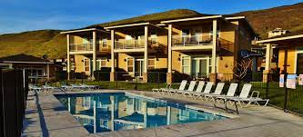

The Trailers
Experience the epitome of relaxation and convenience by staying at the trailer park in Crescent Bar Resort. Nestled within the tranquil surroundings of the resort, the trailer park offers a unique blend of comfort and outdoor adventure. Wake up to the gentle rustle of leaves and the sound of birdsong, as you step outside your cozy trailer to greet the day. Enjoy a leisurely breakfast on your private patio, surrounded by lush greenery and breathtaking views of the Columbia River. Then, embark on a day of exploration, whether it's lounging on the sandy beaches, casting a line into the river for a relaxing fishing excursion.
The Campground
Immerse yourself in the great outdoors and experience the true essence of adventure by staying at the campground in Crescent Bar Resort. Tucked away amidst the natural beauty of Washington State, the campground offers a rustic yet inviting retreat for outdoor enthusiasts of all kinds. Pitch your tent under a canopy of stars and fall asleep to the soothing sounds of nature surrounding you. Rise with the sun and begin your day with a hike along scenic trails, where panoramic views of the Columbia River and rugged terrain await. As the day unfolds, enjoy a leisurely picnic by the water's edge or cool off with a refreshing swim in the river. Gather around the campfire in the evening, swapping stories and roasting marshmallows with fellow campers under the expansive night sky. With access to all the amenities of Crescent Bar Resort and the freedom to explore the wilderness at your own pace, camping at Crescent Bar offers a truly unforgettable outdoor experience for adventurers of all ages.

The Condos
Indulge in the ultimate blend of luxury and relaxation by staying at the condos in Crescent Bar Resort. Set against the picturesque backdrop of the Columbia River, these elegant accommodations offer a serene retreat for discerning travelers. Step into your spacious condo and be greeted by modern amenities and stylish decor, creating a welcoming atmosphere for your stay. Wake up to panoramic views of the river and surrounding mountains from your private balcony, as you savor a freshly brewed cup of coffee. Spend your days lounging by the pool, unwinding in the hot tub, or exploring the resort's myriad recreational activities, from golfing and tennis to water sports and hiking. In the evenings, dine al fresco on your balcony, savoring delicious meals prepared in your fully equipped kitchen or grilling up a feast in the outdoor barbecue area.
